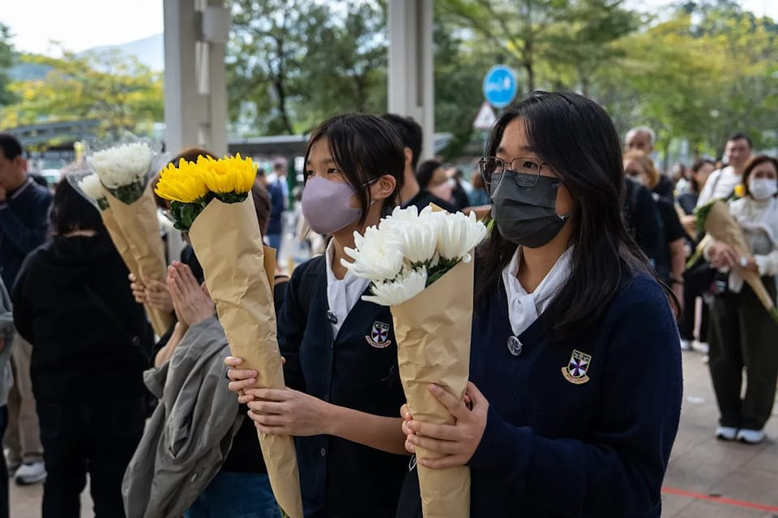

世界苦茶12月02日新闻 | 47条 | 香港宏福苑大火致151人遇难

香港宏福苑大火致151人遇难 | 香港发现争议棚网没有达到标准 | 中国就滨崎步是否进行演出发生争议 | 俄罗斯对中国公民免签 | 加拿大加入欧洲1500亿欧元防务计划 | 洪都拉斯选举技术性平局
苦茶数据
美元兑人民币：7.06（昨日7.07，前日7.07）
美元兑日元：155.74（昨日155.51，前日156.20）
上证指数：3897（昨日3901，前日3888)
标普500指数：6812（昨日6812，前日6765）
比特币：87057（昨日86778，前日91511）
布伦特原油：63.13（昨日63.29，前日62.38）
中国新闻
• 立法会选举如期举行的考量。
香港大埔住宅区宏福苑上周三遭受无情大火吞噬，连日来死伤数字不断上升。许多港人悲恸不已之余，也开始反思这次悲剧的起因，包括是否涉及楼宇维修棚架物料质量等问题。原本是政界头等大事的立法会选举，反而没什么人关心了。按照原本计划，香港本星期天举行第八届立法会选举。港府和建制派阵营过去一个多月积极宣传，包括提供大量优惠，甚至是半天假期，希望提高投票率。岂料这场突如其来的火灾，既打乱港府的部署，也令当局面临两难局面：到底应该如期还是延后选举。第一种方案是如期举行立法会选举。理由是同步推进选举与灾后重建工作，两者并不矛盾。尤其是立法会作为特区的立法机关，政府运作须与它紧密配合。尽快选出新一届立法会。
• 香港宏福苑大火现场采集到七处棚网没有达到阻燃标准。
香港大埔宏福苑大火的死亡人数升至151人，仍有30多人失联。有关当局以涉嫌误杀拘捕13人，并且在现场采集到七处棚网样本没有达到阻燃标准。综合法新社、香港电台、“香港01”和《明报》等报道，香港警方星期一在最先起火的宏昌阁搜索四分之一的单位，发现五具遗体。截至当天下午4时，这场五级大火共造成151人死亡。新界北总区指挥官林敏娴指，由于宏昌阁最先起火、较迟熄灭，内部环境“非常、非常恶劣”，部分遗体残缺不全或烧成灰烬。星期一发现的遗体，约半数在屋内发现，半数于走廊或楼梯寻获。宏福苑共有八座大楼，只有一座没有被大火波及。香港警方过去两天完成五座大楼的搜索。
• 滨崎步在社媒发限时动态 证实在无观众下唱完全场。
日本歌手滨崎步原定上周六在上海举行大型演唱会，却在前一天被紧急通知中止公演。网传内部消息称，滨崎步于没有观众的情况下，在舞合从头到尾演出一次，照片在网上热传，她星期天在Instagram发布限时动态证实消息。滨崎步在Instagram转发有关她于在无观众情况下演出的报道，然后写道：“正如这篇文章所述，昨天收到取消演出的要求后，我们从第一首歌一直表演到安可曲，没有观众，然后离开场地。所有演员和工作人员都竭尽全力，以跟正常演出时同样的热情在舞台上表演，就像我们原本应该面对1.4万名TA一样。
• 中国高级外交官抨击美国的深海采矿战略。
“中国的高级外交官就深海采矿战略抨击美国：‘海洋并不平静’”副部长在针对特朗普推动美国开发海床矿产的行政令的评论中警告说 “海洋并不平静。某些国家以各种借口在海上非法使用武力，严重威胁地区和平与安全，”华周一表示。她在北京举行的一个以国际海洋争端解决和国际法为主题的论坛上致开幕辞时这样说。“有些国家单方面制定并实施了‘深海采矿条例’，侵蚀了人类共同的遗产，”这位副部长说，指的是美国总统唐纳德·特朗普在四月签署的一项行政令。通过指示各机构简化勘探和采矿许可程序，特朗普的行政令允许美国私营公司在未经联合国事先批准的情况下，在美国管辖范围以外的海域从事深海采矿。
• 塔吉克斯坦：5名中国公民上周在阿富汗跨境袭击中丧生。
塔吉克斯坦：5名中国公民上周在阿富汗跨境袭击中丧生 2025年12月1日塔吉克斯坦当局和中国驻塔吉克斯坦大使馆表示，与阿富汗接壤的塔吉克斯坦上周发生了武装袭击事件，造成多名中国公民伤亡。据路透社报道，塔吉克斯坦当局周一表示，在过去一周，五名中国公民在塔吉克斯坦境内遭到来自邻国阿富汗的袭击身亡。中国驻塔吉克斯坦大使馆也在12月1日发文说，“11月30日晚，与阿富汗接壤的塔吉克斯坦戈尔诺—巴达赫尚州达尔沃兹区发生武装袭击事件，造成中国公民伤亡”。中国使馆的最新通告里面没有提到中国公民的伤亡人数，同时“再次提醒中国企业和人员紧急撤离塔阿边境地区，其他旅塔中国公民切勿前往上述地区并做好安全防范”。
• 中国赴日航班减少超900个。
由于中国政府呼吁国民谨慎赴日，以关西国际机场起降的航班为中心，减少航班的情况接连不断。截至11月27日早上，在12月原计划从中国飞往日本的5548个航班中，904个航班已决定取消。最近两天内减少的航班增至原来的3倍以上。如果中日关系长期恶化，影响可能会扩大。围绕日本首相高市早苗针对台湾有事的发言，中国政府于11月14日呼吁国民谨慎赴日，并于11月16日提出谨慎规划赴日留学安排。
**• 俄罗斯对中国免签，暂实施至2026年9月14日。持中华人民共和国护照来俄观光、商务、参加活动、过境，可免签停留30天。 **
印太新闻
• 全球大城市人口：东京圈退至第三，上海第五。
联合国调查的2025年推算人口显示，全球最大的城市圈为印度尼西亚首都雅加达。排在第二位的是孟加拉国首都达卡。东京人口数量截至2000年代前一直位居第一，如今已后退至第三位。联合国近期发布的调查报告显示了这一排名。雅加达的人口在2000年大约为2600万人，过去25年里增加到了原来的1.6倍左右。
• 台湾自制潜舰被曝无锚海试 防长顾立雄否认有政治考量。
台湾自制潜舰海鲲号11月28日完成第五度浮航测试，却曝出五次海试都没有船锚。在野国民党立委抨击国防部，为了赶在11月的期限前完成海试，不顾士兵安危；国防部长顾立雄则严正否认海试有任何政治考量。顾立雄星期一率所属各单位代表到立法院外交及国防委员会，对“军人薪资待遇结构现行做法检讨及未来调整规划”做专案报告。他在会中答复国民党立委徐巧芯等人质询时强调，海鲲号没有强行出海测试。“现在12月1日，我们没有做任何政治性考量，11月底要完成所有海试事实上已经做不到，仍会秉持安全考量。”
• 印尼洪灾死亡人数已超过500人，另有数百人失踪。
上周袭击印尼的洪灾死亡人数现已攀升至500多人，救援人员仍在奋力到达受灾地区。该次洪灾由在马六甲海峡形成的一场罕见气旋引发，已波及三省，影响约140万人，政府灾害机构称。另有约500人失踪，数千人受伤。印尼只是近日遭遇暴雨和风暴的亚洲地区之一，泰国、马来西亚和斯里兰卡也都有死亡报告。在印尼，亚齐省、北苏门答腊省和西苏门答腊省受创最重，数千人仍被隔离，缺乏关键物资。来自亚齐皮迪亚贾亚区的居民阿里尼·阿玛利亚对BBC说，洪水“像海啸一样”。“据我奶奶说，这是她一生中最严重的灾难。”
• 尽管人权组织表达担忧，泰国仍将一名越南活动人士引渡回国。
尽管人权组织担心若遣返回越南他可能面临危险，泰国当局仍将一名自去年起在曼谷被拘留的越南活动人士引渡回国。其律师纳达西里·伯格曼周一告诉美联社，帮助创立为越南少数民族权益发声组织的Y Quynh Bdap于周五被移交给越南当局，目前下落不明。“他周五从泰国当局的监护中消失，截至目前我们仍不知道他的下落，”纳达西里说。“这显然违反了泰国禁止酷刑和强迫失踪的法律。” 泰国皇家警察对此次引渡尚未立即回应查询。泰国惩教署周五表示，鉴于上诉法院维持了下级法院于2024年作出的将其引渡回越南的决定，已将Bdap从曼谷一所监狱移交给警方。
• 超过12万台家用摄像头被黑，用于获取“性剥削”影像。
韩国警方周日宣布，四名嫌疑人因涉嫌入侵超过12万台家庭与商业视频摄像头，并将画面制作成性剥削材料上传至海外网站而被捕。警方表示，犯罪嫌疑人利用网络协议摄像头的漏洞，例如简单密码等，实施入侵。作为闭路电视的较廉价替代品，IP摄像头又称家用摄像头，可连接家庭网络，常用于安全监控或照看儿童和宠物。据报道，被入侵的摄像头包括私人住宅、卡拉OK包间、普拉提工作室和妇科诊所等地。韩国国家警察厅在一份声明中透露，四名嫌疑人彼此独立活动，并未相互合谋。其中一名嫌疑人被控入侵6.3万台摄像头，制作545段性剥削视频。
• 为什么2026年将成为印度太阳探测任务的非同寻常之年。
对于印度的阿迪特雅‑L1号——印度首个太阳空间观测任务来说，2026年预计将与众不同。这是自去年将该观测器送入轨道后，它首次能够在太阳达到活动极大期时进行观测。根据NASA，太阳活动大约每11年一次，届时太阳的磁极会翻转——相当于地球上的南北极互换位置。这是一个极其动荡的时期，太阳从平静转向暴躁，伴随大量太阳风暴和日冕物质抛射的剧增——这些是从太阳最外层日冕喷出的巨大火球。CME由带电粒子构成，质量可达万亿公斤，速度可达每秒约3000公里。它可以向任意方向撒出，包括指向地球。
• 认为日美关系良好的日本人比例跌至历史第二低。
日本内阁府11月28日发布了有关外交的舆论调查结果。关于日本与美国关系，回答「良好」或「基本良好」的比例合计为70.8%。较2024年度上次调查下降了14.7个百分点。这是在该调查中加入同类问题的1998年以来的历史第二低水准。这一变化可能受到美国川普政府下的关税政策的影响。回答对美国「感到亲近」或「总体上感到亲近」的合计比例为77%，较此前下降了7.9个百分点。（翻評：特朗普太厲害了，統計數據不騙人。）
• 高市早苗内阁支持率为75%。
高市早苗内阁支持率为75%，在支援的理由中，第一位是「人品值得信赖」，第二位是「有领导能力」。关于「希望首相优先处理的政策课题」，回答「应对物价」的比例最高，达到55%。
• 日本考虑向菲律宾出口导弹，北京强烈反对。
随着日本考虑向菲律宾出售导弹系统，北京表示不满 日本媒体报道，为放宽武器出口限制，东京正考虑向菲律宾出口一种导弹系统，此举可能招致北京批评。共同通讯社周日报道称，东京已就可能出口这一日本研制的导弹系统与菲律宾进行了非正式会谈，消息人士向该社透露。一旦东京正式决定取消限制防务装备出口的规则，预计将开始对该项出口进行实质性研究——据报道，这一变化可能在明年发生。该履带/轮式车辆发射的防空系统射程达50公里，采用主动雷达制导，能够拦截飞机和巡航导弹。共同社称，菲律宾方面已表示有意为其军队采购该系统。
• 印度下令手机厂商预装国有网络安全应用。
一份政府命令显示，印度电信部已私下要求智能手机制造商在所有新设备上预装一款无法删除的国有网络安全应用，此举可能引发苹果公司和隐私倡导人士的不满。政府数据显示，该应用自一月推出以来已帮助找回超过七十万部丢失的手机，仅10月就找回五万部。11月28日的命令要求主要智能手机公司在90天内确保政府开发的 Sanchar Saathi 应用预装在新手机上，并规定用户无法停用该程序。印度电信部表示，对于已在供应链中的设备，制造商应通过软件更新向手机推送该应用。政府表示，该应用对应对重复或伪造IMEI号码造成的电信网络安全严重危害至关重要，这些助长了诈骗和网络滥用。
科技新闻
• 空客发现又一问题影响其最畅销的A320客机。
空中客车周一表示，已发现影响其A320客机“一小部分”金属面板的问题。该公司发言人在数天前刚刚警告飞机存在另一项技术问题后向CNN表示，目前正在检查所有可能受其所称“供应商质量问题”影响的飞机，但预计只有部分飞机需要采取进一步措施。发言人称：“问题来源已确认，已得到控制，所有新生产的面板均符合所有要求。”他并指出，受该问题影响的在役飞机数量“非常有限”。路透社周一率先援引业内消息报道称了这一发现。该报道发布后，空中客车股价延续早前跌势，下跌幅度曾达5.7%。
• 一项独立行动称，人工智能是推翻国会两党权力的秘密。
一项独立研究称，人工智能是颠覆国会两党权力的秘密 人工智能助手的兴起正在改写日常生活的节奏：人们把血检结果输入聊天机器人，向ChatGPT寻求恋爱建议，并在从规划旅行到完成作业等各方面依赖人工智能。现在，有一个组织认为人工智能不仅能让日常生活更方便，它还是重塑美国政治的关键。“没有人工智能，我们试图做的事情将是不可能的，”独立中心高级顾问亚当·布兰登解释道。该组织是一家研究并与独立选民互动的非营利机构。其目标是在2026年通过人工智能识别独立候选人可能获胜的选区并发掘潜力股，从而在众议院选出少数几位独立候选人。在众议院控制权处于刀锋平衡的时期，即便赢得少数席位也可能使任何一方无法取得多数。
• 世卫组织表示，类似奥泽匹克的药物应人人可得，而不应仅限于富人。
世界卫生组织建议使用新型减肥药以遏制飙升的肥胖率，并敦促制药公司降低价格、扩大产能，以便低收入国家也能受益。世卫组织的新治疗指南对所谓的GLP-1类药物给出“条件性推荐”，作为包括健康饮食、运动和医生支持在内的更广泛方法的一部分。世卫组织称之为“条件性”推荐，是因为关于GLP-1类药物长期疗效和安全性的数据有限。该建议不适用于孕妇。尽管GLP-1类药物已在高收入国家得到广泛应用，世卫组织警告到2030年，这些药物可能覆盖不到有益人群的10%。肥胖率最高的国家包括中东、拉丁美洲和太平洋岛屿国家。同时，截至今年年初，Wegovy仅在大约15个国家可用。
• 谷歌全球上线Gemini 3人工智能搜索功能。
谷歌宣布，其最新人工智能大模型Gemini 3已正式接入全球搜索引擎，覆盖近 120个国家和地区，初期支持英文搜索。同时，面向高级订阅用户谷歌还推出了专业级图像生成工具Nano Banana Pro。据介绍，Gemini 3不仅集成了谷歌搜索的 AI模式和AI摘要，还通过 “查询扇出技术” 将复杂问题拆解为数十个细分查询，综合全网知识图谱、谷歌地图及产品数据库的信息，生成动态交互内容。此外，这款模型支持多轮对话、多图像合成以及4K分辨率输出，显著提升了内容生成的专业性。作为Gemini 3生态的核心组件，Nano Banana Pro（Gemini 3 Pro Image）同步向Google AI Pro和Ultra订阅用户开放。
经济新闻
• 调查：三分之一欧企拟撤出在华采购 规避出口管制风险。
随着中国持续收紧出口管制，中国欧盟商会星期一发布的最新调查显示，三分之一的欧洲企业正考虑将采购转移出中国，寻求新的供应链布局，以降低中美贸易战带来的不确定性。这份在11月6日至24日开展的调查，共有131家商会会员企业参与。调查显示，32%的受访企业因北京出口管制而计划将采购转移至中国以外的地区；39%则指出，中国商务部处理出口许可的速度低于承诺的45天。今年10月，中国宣布加强稀土出口管制，震惊全球市场，也加剧欧洲企业对供应链再度受扰的担忧。根据调查，131家企业中有75家表示已受到相关管制影响。中国欧盟商会会长埃斯克伦德说，出口管制加剧在华欧洲企业的不确定性。
• 福建75亿元人民币大坝施工被曝偷工减料 官方成立调查组。
中国福建省三明市永安抽水蓄能电站在建的下水库工程，被曝大坝施工严重偷工减料，存在安全隐患。中国电力建设集团通报，已成立调查组展开核查。据《经济参考报》报道，这项工程由中国电建子公司中国水利水电第三工程局有限公司承建，是中国抽水蓄能“十四五”规划重点项目，总投资约75亿元人民币。现场情况显示，用于加固坝肩边坡岩土体的数百根锚筋桩存在质量问题：施工长度大幅缩水，部分甚至不足设计标准的三分之一；多数锚筋桩也未按规范完成水泥砂浆灌注，施工方仅在孔口简单封浆，以应付检查。按设计要求，坝肩两岸需要安装逾1000根锚筋桩，目前已完成600余根。但多名参与施工的工人透露，其中可能只有30%符合设计标准。
• 巴西央行行长称，中国的廉价进口缓解了通胀压力。
加布里埃尔·加利波洛证实，来自中国的进口在增加，而其价格在下降，短期内缓解了巴西的通胀压力。“在某种意义上，这抵消了本该更大的影响，无论是对经常账户逆差还是对通胀，”他说。“去通胀”指的是价格上涨速度放缓，而“通缩”则是价格出现实际下跌，经济学家认为这两者都表明需求走弱，可能抑制投资和消费，即便价格下跌也会损害增长。加利波洛的言论是在巴西官员应对经济学家所称的中国工业产能过剩影响之际发表的。
• 特朗普政府宣称胜利：英国在NHS药品支出问题上向压力屈服。
英国已同意提高国家医疗服务体系对新药的支出上限，这是在特朗普政府施压下为换取免关税进入美国市场而做出的让步。该协议将把国家卫生与临床卓越研究所的成本效益阈值提高25%，正如POLITICO在十月首次报道的，并将NHS可向制药商回收收入的上限削减至不超过15%。英国政府称，这两项调整合计将使NHS长期药品支出增加约25%，但具体细节尚未公布。唐宁街10号称，资金将来自已在支出审查中拨出的款项——这意味着卫生与社会关怀部可能被迫承担相关费用——但“一线”服务将得到保护。
• 随着俄罗斯即将发行人民币债券，中国推动人民币的努力取得进展。
彭博汇编数据表明，今年外国政府通过人民币债券筹集了创纪录的130亿元人民币。俄罗斯正逐步接近其首笔以人民币计价的主权债券发行，这有助于提升人民币的国际地位。俄罗斯财政部将于12月2日开始接受这批分两部分、在国内交易的债券的认购。据俄新社引述的国际文传电讯社报道称，借款方预计将以3.2年期债券目标票面利率6.25%至6.5%进行推介，7.5年期部分的票面利率上限为7.5%。在财政赤字且无法获得美元和欧元融资的情况下，莫斯科有动机发行人民币债务。
• 亚洲发往欧洲货柜海运量7～9月创新高。
日本海事中心汇总的数据显示，9月亚洲发往欧洲的海上货柜运输量达到162万5079个，同比增长13.7%。中国出发的运输量表现强劲，持续带动整体。在亚洲发往欧洲的运输量中占到大约8成的中华地区出发的运输量大幅增长16%。有观点认为，在中美贸易摩擦持续的背景下，中国正不断加强对欧洲的出口。日本海事中心统计的欧盟27国从中国进口的数据显示，8月进口量同比增长4.3%，进口额同比下降9.4%。这一现象表明中国方面为优先扩大出口量，有可能降低了单价。
• 丑闻缠身的中国军火公司在创纪录的一年拖累了地区销售。
斯德哥尔摩国际和平研究所百强显示在全球收入上升背景下，唯一录得下降的地区表现差异明显 。尽管去年全球军火销售总体出现大幅且创纪录的增长，瑞典智库发现，武器行业百强榜单中八家中国公司的合并收入却大幅下滑。该合并收入下降10%，至883亿美元，这也是榜单中各有公司上榜的国家中降幅最大的一项。这些中国军工巨头的表现，与日本和韩国的同行形成鲜明对比——据SIPRI报告，随着全球军售创下新高，日、韩公司的收入出现大幅增长。中国最大的陆基武器生产商中国北方工业公司录得最急剧的下降。
• 马斯克预言AI将在三年内终结美国债务危机。
在上周日播出的一档播客节目中，马斯克表示，美国债务问题只有一个出口：AI。“摆脱美国日益加深的财政漏洞的唯一途径是由AI和机器人驱动的生产力 (提高)。这几乎是解决美国债务危机的唯一办法，但这可能会导致严重的通货紧缩，”他补充说道。马斯克进一步指出，AI尚未将生产力提高到足以推动经济产出增速超过通货膨胀的程度，但这种情况即将改变。“我估计，三年或更短的时间内，商品和服务产出将超过通货膨胀率，”他补充说。马斯克还表示，AI和机器人技术的进步将使未来工作将成为 “可选项”，而非“必选项”，而这可能在未来二十年内发生。
• 数据中心能源需求预计到2035年将飙升近300%。
根据彭博新能源财经的一份新报告，计划中的数据中心建设没有显示出减弱的迹象，新增部分将在未来十年将需要该行业当前电力需求的2.7倍。到2035年，数据中心将消耗106吉瓦，比数据中心现在使用的40吉瓦大幅上升。彭博新能源财经表示，大部分增长将发生在更偏远的地区，因为设施规模扩大以及城市附近的地块变得稀缺。推动部分增长的是计划中数据中心的庞大规模。而现在只有 10% 的数据中心消耗超过 50 兆瓦的电力，但未来十年，平均新设施将消耗远超过 100 兆瓦。最大的数据中心会拉高数据：近25%将大于500兆瓦，少数将超过1吉瓦。
俄乌战争
• 泽连斯基称乌克兰领土问题是“最棘手”的问题，正值美国特使准备会见普京之际。
泽连斯基称乌克兰领土问题“最棘手”，美方特使即将会见普京 泽连斯基表示，基辅在结束与俄罗斯战争的和平谈判中的优先事项是维护乌克兰主权并获得强有力的安全保障。泽连斯基称“领土问题是最难的”，因俄方继续要求乌克兰放弃仍由其控制的顿巴斯东部部分地区——基辅坚称绝不可能这样做。他在巴黎会见法国总统埃马纽埃尔·马克龙后发表上述言论，并参加了包括英国、德国、波兰和意大利领导人在内的欧洲领导人通话。与此同时，乌美谈判代表在佛罗里达完成了为期两天的会谈，旨在修订一份被认为有利于俄方的和平方案。白宫周一对会谈持积极语气，新闻秘书卡罗琳·利维特称政府“对达成结束战争的协议感到非常乐观”。泽连斯基则更为谨慎。
• 马克龙：关于乌克兰尚无“最终确定”的和平方案。
尽管华盛顿要求达成结束乌克兰战争的和平协议，法国总统埃马纽埃尔·马克龙周一仍坚持在任何协议达成前还有大量工作要做。“今天，在领土问题上还没有定稿。这些只能由泽连斯基总统来定稿，”马克龙在与乌克兰总统共同举行的记者会上说。马克龙还表示，有关被冻结资产和安全保障的谈判仍处于“初步阶段”。由于比利时的反对，欧盟在利用1400亿欧元被冻结的俄罗斯储备为乌克兰提供赔偿贷款方面受阻。乌克兰总统弗拉基米尔·泽连斯基此次到访巴黎以示支持，他正面临美国总统唐纳德·特朗普政府的巨大压力，要求作出让步以结束战争。他说，美国提出的和平计划——最初包括领土让步和限制基辅军队规模——“有所改进”。
• F-16弹药、防空系统——荷兰宣布价值2.9亿美元的对乌援助计划。
荷兰宣布向乌克兰提供2.9亿美元援助包：F-16弹药，航空防御等 荷兰于12月1日承诺按照“优先乌克兰需求清单”购买价值2.5亿欧元的美制武器以供基辅使用。PURL倡议于今年早些时候启动，使北约盟国能够为乌克兰采购先进的美制武器。荷兰国防部宣布，在最新一揽子计划中，荷兰将为乌克兰采购无人机，F-16战斗机导弹以及用于防空的弹药和装备。荷兰在8月成为首个通过PURL项目为乌克兰资助武器的国家。北约秘书长马克·鲁特表示，基辅预计在今年年底前将通过该倡议获得价值高达50亿美元的武器。荷兰国防部长鲁本·布雷克尔曼斯还宣布，他已与乌克兰同行丹尼斯·希姆哈尔签署两国联合无人机生产的协议。
• 国际刑事法院院长誓言不为美国和俄罗斯的制裁与威胁所动。
国际刑事法院院长周一在该机构年度会议上表示，法院不会屈服于美国和俄罗斯的压力。美国总统唐纳德·特朗普对九名工作人员实施制裁，其中包括六名法官和法院的首席检察官，以回应对美国和以色列官员的调查；而莫斯科则针对法院对乌克兰战争发出的对总统弗拉基米尔·普京的逮捕令，向工作人员发出逮捕令。“我们绝不会接受任何形式的压力，”法官赤根朋子对来自法院125个成员国的代表团表示。这些制裁已对法院在多项调查上的工作造成影响，正值该机构在资源上面临越来越多的需求。
• 北约可能在应对俄罗斯的混合攻击时“更为强硬”，一位高级军事官员表示。
北约正在考虑在应对俄罗斯的网络行动、破坏活动和空域侵犯方面采取更有进取性的反应，该联盟首席军事官员在接受金融时报采访时表示。担任北约军事委员会主席的朱塞佩·卡沃·德拉贡海军上将称，联盟正在重新评估如何应对在欧洲不断加剧的混合威胁。“我们正在研究一切在网络领域，我们有点被动。变得更具侵略性或更主动而不是被动，这是我们正在考虑的事情，”德拉贡对金融时报说。他还暗示，在某些情况下，“先发制人的打击”可以被视为“防御性行动”，同时指出这种做法“有点远离我们平常的思维和行为方式”。近年来，欧洲国家遭遇了一系列混合事件——包括网络攻击。
世界新闻
• 疫苗委员会主席离职，赴美国卫生与公众服务部就任新职。
美国卫生部长罗伯特·F·肯尼迪领导的有争议疫苗咨询委员会本周晚些时候将在一位新主席主持下召开，联邦官员周一宣布。官员称，马丁·库尔多夫将离开免疫实践咨询委员会，转到卫生与公共服务部担任领导职务。曾指责疫苗导致心血管疾病的柯克·米尔霍恩博士将成为新任主席。他于九月被任命为委员会成员。本周晚些时候，委员会计划讨论儿童疫苗接种时间表以及对新生儿接种的乙型肝炎疫苗。卫生与公共服务部发布新闻稿，赞扬库尔多夫在领导该小组时的工作，但未就人员变动回答更多问题。库尔多夫尚未立即对置评请求作出回复。
• 奥地利的叛逆修女拒绝为留在修道院而放弃Instagram。
自从闯回萨尔茨堡附近的修道院后，伯纳黛特修女、雷吉娜修女和丽塔修女一直忙个不停。在她们的 Instagram 账号上，82 岁的丽塔被拍到在回廊里奔走，并尝试拳击课；86 岁的雷吉娜已习惯爬四层楼，常常忘记使用新捐赠的座椅电梯；88 岁的伯纳黛特则常在一杯仪式般的咖啡旁，机智地点评宗教与世俗事宜。今年秋天，这些已过八旬的修女在声称教会当局违背她们意愿将她们送入护理机构后，从该护理院“逃出”的消息登上全球头条。圣奥古斯丁修会的修女们获得当地社区支持，并在 Instagram 上积累了超过 18.5 万名粉丝。
• 美国上诉法院裁定，前特朗普律师阿丽娜·哈巴被取消担任新泽西检察官的资格。
美国上诉法院周一裁定，前总统唐纳德·特朗普的前私人律师阿利娜·哈巴被取消担任新泽西州联邦首席检察官的资格，尽管其政府曾试图让她继续留任。位于费城的美国第三巡回上诉法院的法官小组在10月20日听取了有哈巴在场的口头辩论后，支持下级法院的裁决。法院在一份32页的意见书中写道：“显然，现任政府在让其被任命人就任方面受到了一些法律和政治障碍的挫折。其试图提升其首选人——新泽西区美国检察官阿利娜·哈巴——为代理美国检察官的努力。
• 捷克总统暗示可能否决有争议的环保部长人选。
捷克总统彼得·帕维尔表示，除非能就一系列争议作出解释，否则民粹主义政客菲利普·图雷克不适合出任布拉格的环境部长。“这些反对意见主要来自公众领域的讨论。当然，我尊重无罪推定的原则，菲利普·图雷克目前并未被起诉。但我们对政治家的期望不只是他们不触犯法律，”帕维尔周一在捷克电视台表示。图雷克是执政联盟中右翼民粹组织“Motorists for Themselves”的名誉主席，曾被前女友指控性侵——他称此指控“荒谬”——还被指在脸书上发表过种族主义、性别歧视和恐同言论，他予以否认。警方正在调查这两起事件。
• 加拿大达成协议加入欧洲价值1500亿欧元的防务计划。
两名欧盟外交官告诉POLITICO，加拿大已达成最终协议，加入欧盟1500亿欧元“欧洲安全行动”计划，这标志着首次有第三国正式参与该集团的旗舰联合采购机制。欧盟委员会随后证实了该协议。
• 美国议员要求就赫格塞斯称委内瑞拉船只遭袭一事给出答案。
美国国会议员就赫格塞斯关于委内瑞拉船只空袭的说法要求澄清 在一份报道声称为消灭首次袭击幸存者而下达了后续打击命令后，美国国会议员正敦促特朗普政府就针对疑似委内瑞拉毒品船只的军事打击作出说明。负责监管五角大楼的共和党主导委员会誓言对美国在加勒比海的船只打击进行“严厉监督”。华盛顿邮报周五报道说，9月2日对一艘船的美军打击留下两名幸存者，但为执行国防部长皮特·赫格塞斯下达的“把船上所有人都杀死”命令而进行了第二次袭击——这一说法再次引发合法性质疑。赫格塞斯抨击该报道为“假新闻”。周日，美国总统唐纳德·特朗普表示他“百分之百”相信自己的国防部长。近几周来，美国在加勒比海扩大了军事存在。
• 孟加拉国前领导人哈西娜及其侄女、英国议员图利普·西迪克被判贪污罪名成立。
孟加拉国前领导人谢赫·哈西娜及其在英籍议员侄女均被判贪腐 达卡，孟加拉国——达卡一家法院周一以涉及一项政府土地项目的贪腐罪判处被罢免的前总理谢赫·哈西娜五年监禁，其侄女，英国工党议员图利普·西迪克两年监禁。达卡特别法官法院法官拉比乌尔·阿拉姆表示，哈西娜在任总理期间滥用职权，而西迪克则被认定以不正当手段影响其姨妈，帮助其母亲和两个兄弟姐妹在一项政府项目中获得一块地皮。西迪克的母亲谢赫·雷哈娜被判七年监禁，并被视为本案的主要参与者。法官还向三人各罚款813美元，并下令取消为雷哈娜分配的地块。另有14名嫌疑人。哈西娜所属的人民联盟党表示，该判决“完全可以预见”。
• 法国拟取消对外国退休人员的免费医疗。
梦想在法国里维埃拉阳光下度过退休生活的外国退休人员，如果他们的免费医疗被削减，可能得重新考虑计划。法国希望目前享受公共医疗体系的非欧盟退休人员开始为此买单。此举将特别影响涌向这个欧洲最慷慨福利国家之一的美国退休人员——他们不仅为美食、风景和文化而来，有些人还因这里世界级的免费医疗而定居。“这是公平问题，”提出该提案的议员弗朗索瓦·热尔尼侬对POLITICO表示。
• 德国极右翼政党另类选择党在真正掌权指日可待之际试图重塑形象。
在成为德国极右派主要人物之前，莱夫-埃里克·霍尔姆曾是家乡东德一个州的晨间广播主持人，电台称赞他“笑话远近皆知”。在明年德国各州举行的选举前，现年55岁的霍尔姆现被定为德国另类选择党在梅克伦堡-前波美拉尼亚州的首位候选人。该州主要为农村地区，毗邻波兰和波罗的海。民调显示，AfD在该州以38%的支持率位居首位，这是该党——如今已成为德国联邦议会最大的反对党——自十多年前成立以来，首次有望在该州取得显着执政权的几个触手可及的地方之一。
• 全球EV电池产能将达需求的3倍。
全球纯电动汽车电池已陷入生产过剩的局面。预计2030年总产能将达到实际需求的3倍。尤其是在北美市场，川普政府的政策转变导致补贴终止，而今后5年EV电池产能将增至4倍，供给过剩问题突出。通用汽车、福特汽车等企业已开始调整生产计划。福特EV业务停滞，招牌车型停产 在美国南部肯塔基州伊丽莎白镇，有福特与南韩电池巨头SK On正联合建设的大型电池工厂。该项目开发了相当于130多个东京巨蛋体育场的广大土地面积，投资58亿美元生产福特EV搭载的电池。工厂的部分生产线已于8月启动。
• 洪都拉斯总统候选人陷入“技术性平局”，官员称。
洪都拉斯选举机构表示，总统候选人呈“技术性平局” 初步计票结果显示，洪都拉斯两位领先的总统候选人处于“技术性平局”，该国选举机关表示。国家选举委员会主席安娜·保拉·霍尔在X上发文称，右翼候选人纳斯里·阿斯富拉以仅515票领先前电视主持人萨尔瓦多·纳斯拉拉。霍尔同时呼吁“耐心与谨慎”，并补充说人工点票仍在进行中。在该国选举结果迟迟未出之际，局势日益紧张，这一平局进一步加剧了紧张气氛。选举委员会的网站也已崩溃，进一步引发公众对计票存在问题的担忧。阿斯富拉得到了美国总统唐纳德·特朗普的支持，特朗普曾威胁若他支持的候选人落败，将削减对该中美洲国家的财政援助。
• 马斯克说自己应该少碰政治。
在当地时间11月30日上线社交平台的一档播客节目中，美国亿万富翁马斯克坦言，他发现自己“只要参与政治，结果通常都挺糟糕”，所以他觉得自己还是“少掺和为好”。马斯克在2024年美国大选中支持特朗普和共和党，曾出任特朗普的“政府效率部”负责人，之后离开白宫。几个月前，马斯克还因所谓的“大而美”法案与特朗普公开闹掰，一度宣布要成立新的“美国党”。不过在今年9月特朗普政治盟友查理·柯克的葬礼上，特朗普与马斯克被拍到握手并交谈。11月18日，他还出现在特朗普为到访的沙特王储穆罕默德·本·萨勒曼举行的白宫晚宴上。